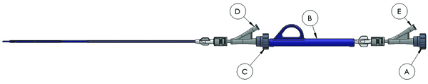

Venous InterGraft delivery system preparation
Follow these steps prior to delivering venous InterGraft connection
-
Using sterile technique, open VIG package and place InterGraft delivery system
in sterile field.
-
Remove the white graft grippers.

-
Attach a stopcock to each of the T-B ports D,E.
-
Loosen the T-B valves A,C.
-
Using 10cc syringe, flush the delivery system with sterile saline solution.
Close valve A
-
To load the 0.018" guide wire into the VIG delivery system, loosen both T-B
valves A, C.
- Backload wire into delivery system and gently close T-B valve
C.
-
Deliver Venous InterGraft